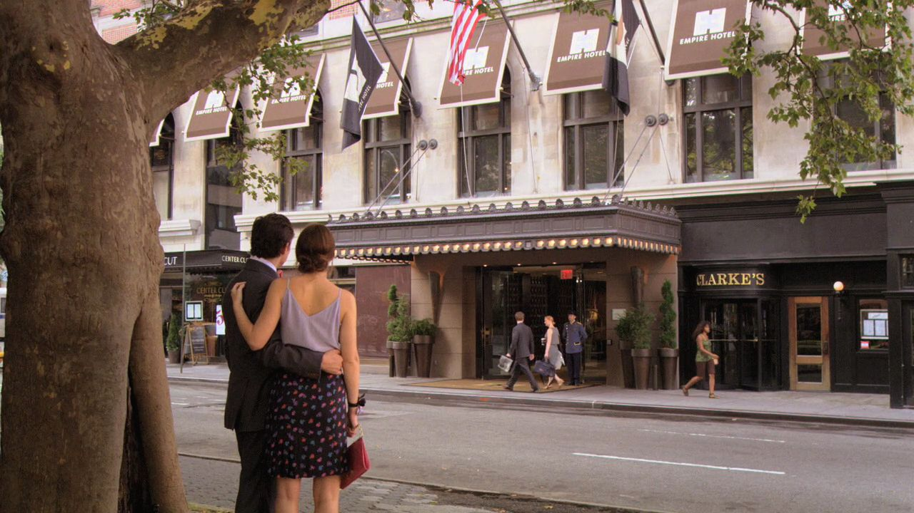

Empire Hotel: O Empire State Building é um arranha-céu de 102 andares no centro de Manhattan, Nova York, na Quinta Avenida, entre as ruas 33ª e 34ª Oeste. Ele tem uma altura do telhado de 381 metros, mas com a sua torre de antena incluída, o edifício chega a 443 m de altura. Seu nome é derivado do apelido do estado de Nova York, o Empire State. (wikipédia)